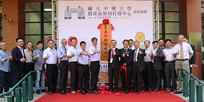

|
資訊科技產業為我國最重要的產業之一，本系身為中部唯一頂尖大學的資訊系所，當以培養國家尖端資訊產業人才為職志。為培養具備資訊理論、硬體、軟體、網路多媒體與資訊應用之全方位資訊人才，本系課程規劃以下列五大領域為重點特色：網路多媒體、嵌入式系統、智慧型系統、物聯網與雲端運算以及資訊安全，並具備以下辦學特色：
課程規劃強調理論與實務課程並重，例如：「邏輯設計」、「作業系統」、「電子電路學」搭配開設「邏輯設計實驗」、「作業系統實驗」以及、「電子電路實驗」；並且將「資訊專題」列為必修課程，以培養具備理論基礎與實作能力的資訊人才。
訓練學生程式能力：首先，本系基礎程式設計課程分為大一上下兩學期：上學期為「計算機程式設計」，下學期則為「物件導向程式設計」，以一學年的時間培養學生基本程式能力；其次，每位老師在課程中都會安排程式相關的作業，強化學生程式能力；另外，本系在大二、大三、大四等年級也開設多門程式設計課程，如組合語言與系統程式、視窗環境程式設計、Unix 系統與 Script 程式設計、網路程式設計、智慧型手機應用程式開發等。本系亦鼓勵學生參與相關程式設計競賽、大學程式能力檢定 (CPE) 等，進一步提升程式能力。本系也邀請上海復旦大學吳永輝教授，於寒暑假期間蒞臨本系培訓學生程式設計能力。
因應雲端產業的趨勢，本系與應數系於研究所合作開設「雲端計算與服務學程」，讓本系能在 2011 年起就開始培育雲端運算與巨量資料分析方面的人才，參加全國性競賽，獲得許多獎項，成績斐然。
本系要求教師的教學科目與個人學術研究與實務經驗領域相結合。因此，在課程開授上，皆依據老師的專長開授相關課程。同時，各位教師也會將其在研究成果與實務經驗上的最新知識與成果應用在教學上，提升學生學習上的樂趣與效果。
本系課程之規劃與設計以落實學生核心能力為基礎，並秉持「理論與應用」並重，「深度與廣度」相輔之精神，以期奠定學生在資訊領域的理論基礎與實務能力，進而提升並擴展學生在資訊技術上的深度與廣度，最終為促進中部地區以及國家資訊相關產業的發展。
推動「知識經濟」已成為未來經濟發展的重要方向，而高素質的資訊人才尤為知識經濟中不可或缺的一環。本系身為中部唯一頂尖大學的資訊系所，以培養國家尖端資訊產業人才為職志。基於這樣的理念，本系訂定以下教育目標，並基於教育目標，根據不同學制，訂定學生應具備的核心能力：
|
|

|
教育目標
- 培養具備資訊理論、硬體、軟體、網路多媒體與資訊應用專長之資訊人才。
- 培養具備理論基礎與實作能力的資訊人才。
- 培養具備自我挑戰與終身學習能力之人才。
|
|
大學部學生核心能力
- 具備資訊科學素養、資訊理論與數學分析之能力。
- 具備分析、設計與實作資訊硬體系統之能力。
- 具備分析、設計與實作資訊軟體系統之能力。
- 具備分析、設計與整合資訊應用系統之能力。
- 具備分析、設計與實作資訊網路與多媒體系統之能力。
- 具備自我學習、溝通協調與團隊合作之能力。
|
|
|
|